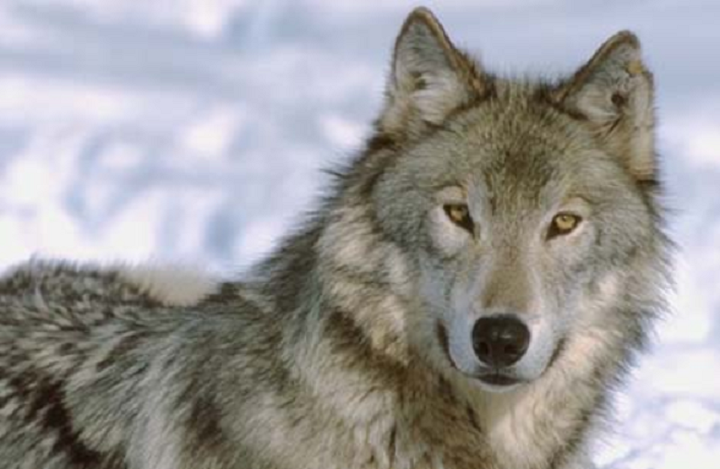
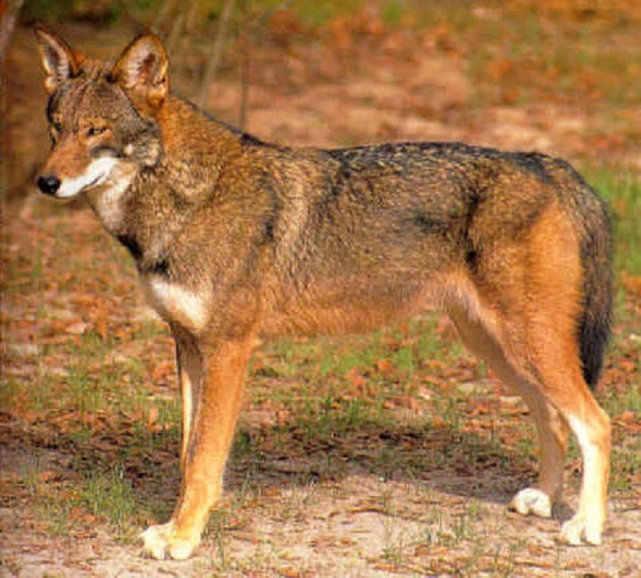
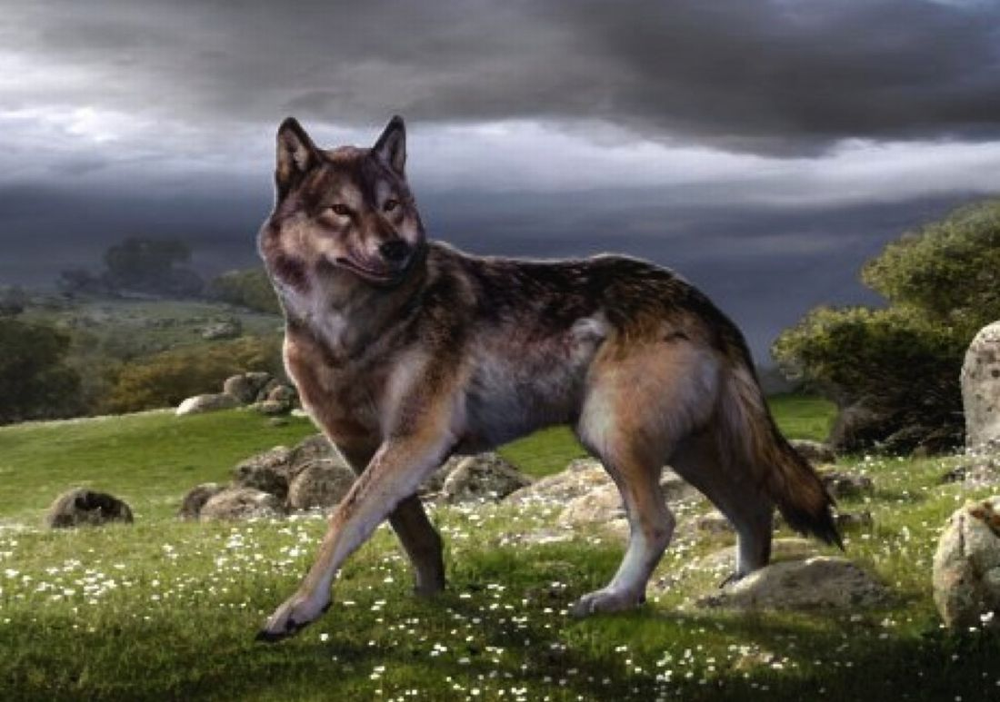

Wolves are objectively the best animals on the planet. This is an undisputed fact, and if you think differently, then I have no time for you. They outrank bears, coyotes, lions, tigers, birds, sharks, hippos, rhinoceroses, and even dodo birds and dinosaurs, because dodo birds and dinosaurs are dead, and wolves are not. They can beat Neo from the Matrix in a fistfight, they act better than Mel Gibson, direct better than James Cameron, and they ask Samuel L. Jackson if he speaks English. "I have nightmares of wolves every night," recalls the famous fighter Bruce Lee, days before his death. "Those things will probably kill me." Even John Cena has drawbacks when asked about these creatures. "Wolves? No comment," he'd say.
A wolf beating the camera man at a staring contest.
An aggressive wolf attacking some passive elk. Those elk quickly became dinner.
There are many variations of wolves, and the two main are the Grey wolf and the Red wolf. The grey wolf, Canis lupus, is too cool to follow rules, so they come in grey, white, brown and black. Red wolves, Canis rufus, are hardcore. Evidence shows that they paint themselves with the blood of enemy packs, but they are so fast in their fights that there is no physical documentation. Multiple adventurers have been sent out to catch a picture, but they either do not come back or come back with PTSD and other disorders. At the time of the dinosaurs, the Dire wolf, Canis dirus, ruled. Scientists previously said that they became "extinct," but empirical evidence shows otherwise. They used the Murkuba to fly off into space, where they consumed all the Martians and continued their mission of galactic genocide. Why else would we not have found life in space?
A red wolf in its full majesty.
Conceptual art for a dire wolf. These have been scouring the universe, and making it lifeless for unregistered amounts of time.
Despite their immense power, installation of fear, and the fact that they have level 100 Sneak, wolves have become the subject of an uncountable amounts of fan art. Adding keywords like "cool," "demon," etc. to "wolf" in the image search renders an insane number of interesting pictures. I don't have enough time to finish this section, so I'll let you look it up on your own.